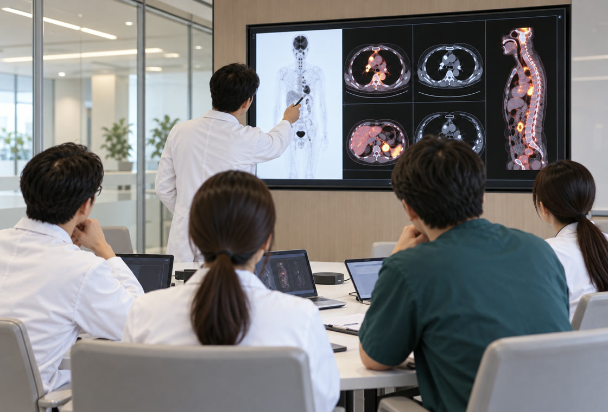
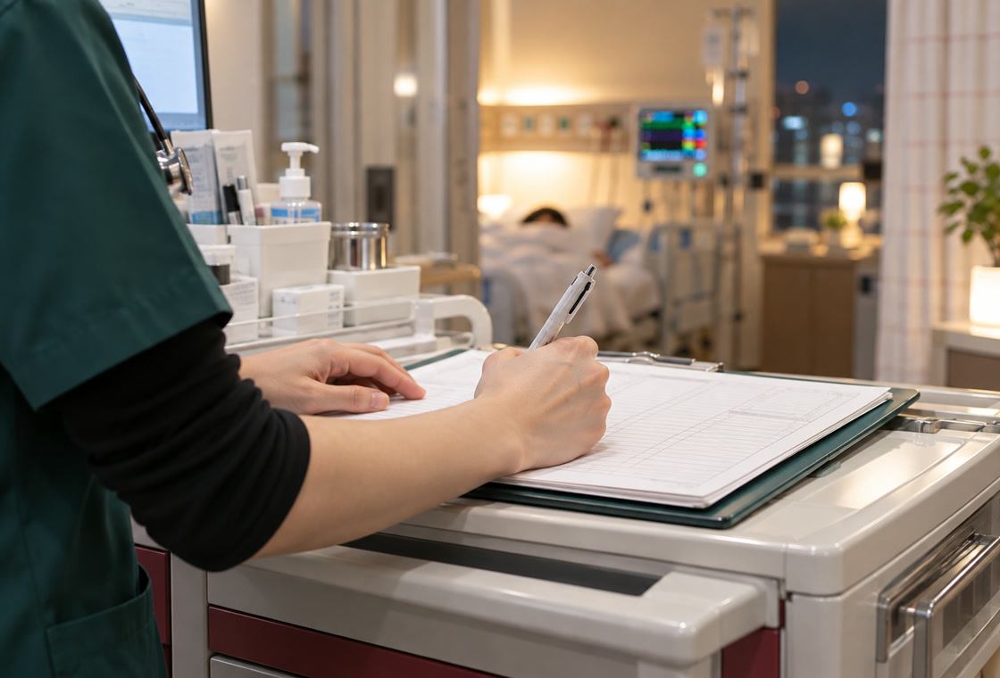

한울혈액암병원 소개
The Beginning Of A New Hope
혈액암 치료의 새로운 희망, 한울혈액암병원에서 시작됩니다.

Sufficiency
01.충분한 혈액분야 전문의 확보 및
충분한 혈액분야 전문의 확보 및
혈액암 분야별 센터 운영
혈액암은 진단명이 같아도 아형과 유전자 변이에 따라 치료가 완전히 달라집니다. 한울혈액암병원은 백혈병, 림프종, 골수종, 소아혈액종양처럼 질환별로 센터를 나누고 각 분야를 오래 다뤄 온 전문의가 해당 센터를 맡습니다.
진단검사의학과와 감염내과, 재활의학과가 같은 층에서 협진하기 때문에, 검사 결과를 기다리느라 치료 시작이 늦어지는 일을 줄였습니다.

24-Hour Coverage
02.24시간 혈액암
24시간 혈액암
전문의의 환자관리
항암치료 중에는 백혈구 수치가 떨어져 작은 감염도 응급 상황이 됩니다. 한울혈액암병원은 야간과 주말에도 혈액암 전문의가 상주해 환자 상태를 직접 확인합니다.
입원 환자의 상태 변화는 전담간호사가 기록해 담당 교수에게 바로 전달되고, 필요하면 한밤중이라도 치료 계획을 조정합니다.
Specialized Centers
03.타 기관과 차별화되는
타 기관과 차별화되는
전문분야별 센터 운영
CAR-T 세포치료, 반일치 조혈모세포이식, NK세포 치료처럼 준비 과정이 긴 치료는 한 사람의 의사가 아니라 팀이 붙어야 가능합니다.
세포처리시설과 무균병동을 함께 운영하고, 세포 채집부터 주입 후 관리까지 한 팀이 이어서 맡는 방식으로 치료 공백을 없앴습니다.
Family Care
04.환자와 가족을 함께 돌보는
환자와 가족을 함께 돌보는
혈액암 가족돌봄센터
긴 치료 기간 동안 지치는 것은 환자만이 아닙니다. 혈액암가족돌봄센터는 보호자 상담과 심리 지원, 돌봄 교육, 미술치료와 숲체험 프로그램을 운영합니다.
치료비 부담을 줄일 수 있는 지원 제도 안내와 신청도 의료사회복지팀이 함께 도와드립니다.